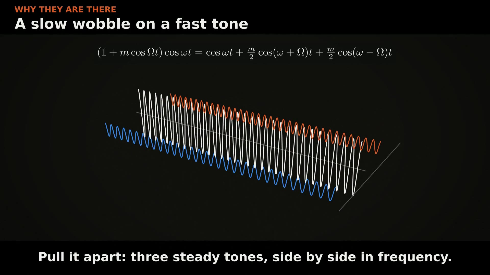
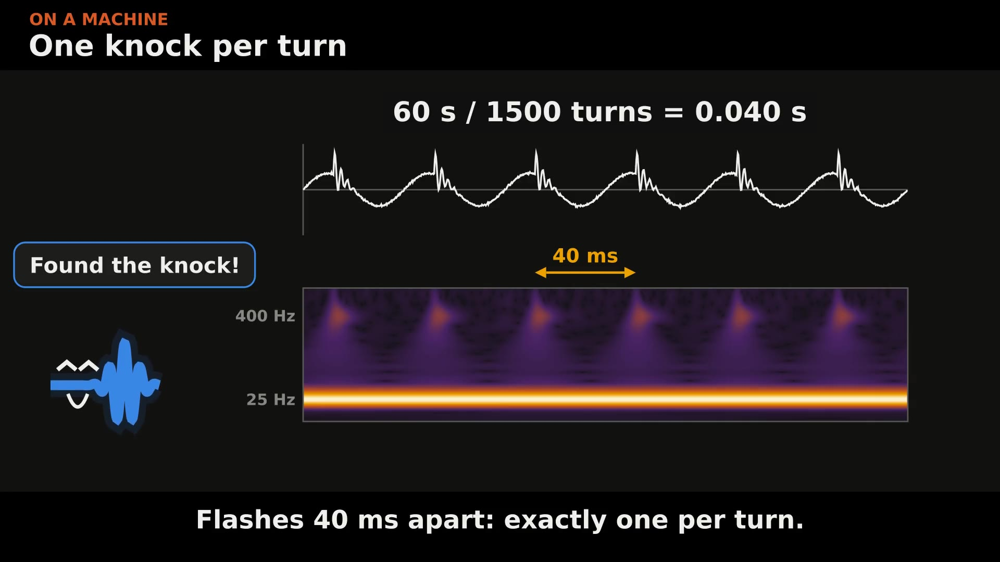
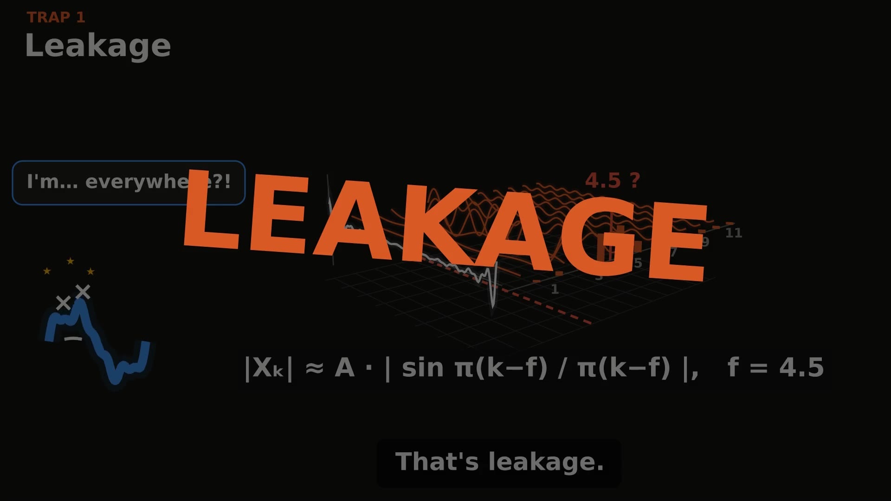
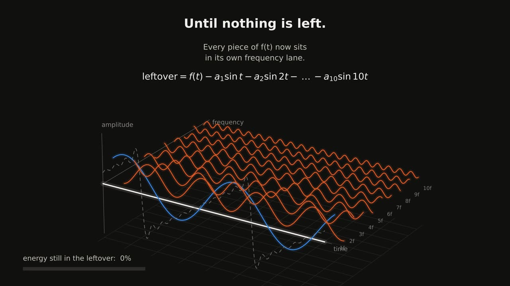
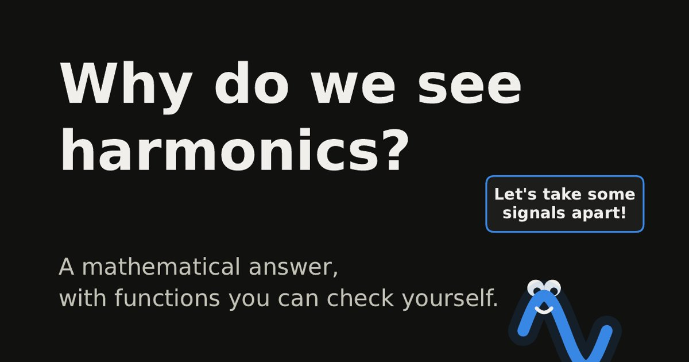
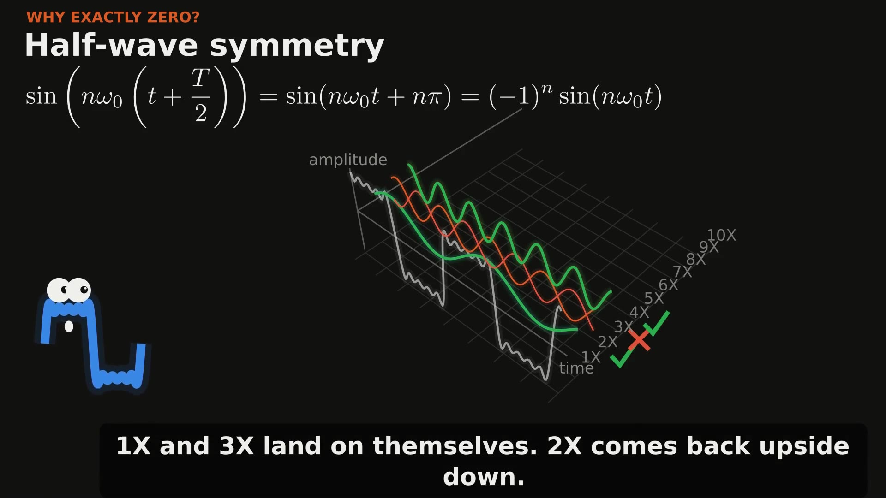

Muhammad Yasir, vibration engineer
Vibration,made visible.
School trigonometry, university Fourier series and the spectrum on a vibration analyser are the same maths. Nodal joins them up: films to see it, lessons that derive it line by line, and calculators for site.
Behind every page is sand on a vibrating plate. It's thrown off the parts that move and settles on the nodal lines, the parts that stay still. Click the plate to change the mode.
Latest
Chladni plates
Series 2
The FFT series

Sidebands: why every peak has twins
A gearbox in slow motion, a swelling tone pulled apart into three, and how growing sidebands point to the faulty part.
Film, sideband board and a Lab lesson
Wavelets: which frequency, and when
Two signals with exactly the same spectrum, and a wavelet map that tells them apart and finds a knock once per turn.
Film, interactive board and a Lab lesson
Leakage and aliasing: the FFT's two traps
Why one clean tone smears across every bin, why a fast signal shows up at the wrong frequency, and the fix for each.
Video, interactive board and Manim codeStart here
The harmonics series

What the FFT actually shows
A signal pulled apart into its sine waves in 3D. From the side, it's the spectrum.

Why we see harmonics
Square, sawtooth, triangle, a clipped sine and a real machine signal, built harmonic by harmonic.

Watch a signal come apart
Every example split into its harmonics in 3D, and why a symmetric wave has exactly zero even harmonics.
Also here
Work through it yourself
Now
What I'm working on
I'm a vibration engineer in Abu Dhabi. Most weeks that means piping that shakes, machines humming at the wrong frequency, and spectra someone needs explained. This site is where I write those explanations down properly, with the maths left in.
- Day jobVibration engineer at Wood, Abu Dhabi: FIV/AIV studies and site diagnostics for gas processing facilities.
- WritingThe FFT series, and a new physics track in the Lab, starting with a mass on a spring.
- Working towardChartered Engineer (CEng) through IMechE.